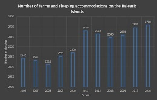
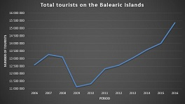

Project information In this work, the influence of tourism on the ecology and economy of the Balearic Islands was investigated.
In a first step, literature was evaluated to identify the basic aspects of tourism, ecology, and economics in the Balearic Islands.
Furthermore, both statistical data and spatial data were first gathered and then examined and evaluated.
Tourism
As expected, the decline of tourism in 2009 and 2010 is big, due to the global economic crisis. From 2008 to 2009, the number of tourists decreased by 1,961,232. In 2012 and 2013, we do not record the decline in tourism, since the second crisis did not affect countries as strong as the first one did. Tourism is currently growing on the Balearic Islands and reaching the highest number of tourists, which is 15,371,922 per year. As has been said tourism is helping the Bal-earic Islands to increase their income, so the growth of total tourists is very good.

Overall, it can be said that the Balearic Islands seem very dependent on tourism in term of economy and various studies found in the literature have also been able to demonstrate the negative impact on the ecology of the islands.
{kind=link}
{kind=link}